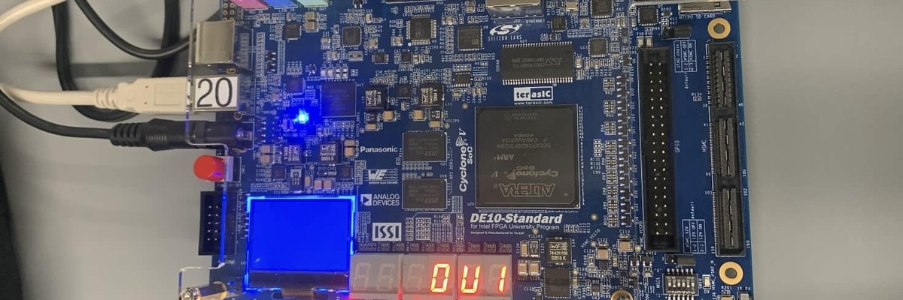

Designed and implemented a complete digital elevator controller on a DE10-Standard FPGA using VHDL, Quartus, and ModelSim. The project simulates a six-floor elevator system with request latching, direction-based scheduling, timed floor-to-floor movement, door indication, idle behavior, and an emergency stop mode.
Floor requests are entered using switches SW0–SW5, with each switch representing one floor from 0 to 5. When KEY0 is pressed, the active floor request is stored in the request latch. Requests remain saved until the elevator reaches the selected floor and completes its door cycle.
The scheduler decides the next floor using a direction-based policy. When the elevator is moving upward, it prioritizes requests above the current floor. When moving downward, it prioritizes requests below the current floor. When idle, it selects the closest requested floor.
The controller FSM manages the full elevator sequence, including idle mode, upward movement, downward movement, floor arrival, door opening, door closing, and emergency stop behavior. Movement is controlled using a 1 Hz timing signal so the elevator visibly moves one floor at a time on the FPGA board.
HEX0 displays the current floor number. HEX1 displays the elevator state: U for moving up, d for moving down, and L for idle. LEDR0–LEDR5 act as floor door indicators, turning on when the elevator door is open at the corresponding floor.
The elevator running on the DE10-Standard board — stepping floor by floor on HEX0, with the door indicator LEDs lighting at each served floor.
© Parniyan Namazifard